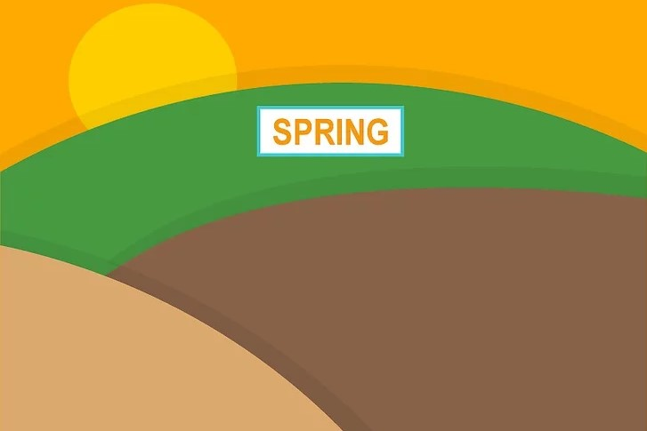
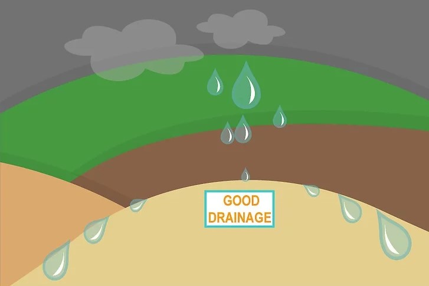

CUSTARDO™

DEVELOPER

Name- KHUSI
Emial- rajkirankhusi12@gmail.com
This company belongs to 
OUR PARTNERS


The fruit of the common custard apple (Annona reticulata), also called sugar apple or bullock’s-heart in the West Indies, is dark brown in colour and marked with depressions giving it a quilted appearance; its pulp is reddish yellow, sweetish, and very soft (hence the common name). Soursop, or guanabana (A. muricata), sweetsop (A. squamosa), and cherimoya (A. cherimola) are widely cultivated worldwide. Alligator apple, or corkwood (A. glabra), a native of South America and West Africa, is valued for its roots, which serve the same purposes as cork; the fruit is not usually eaten fresh but is sometimes used for making jellies.
SHORTCUT
PART 1
Obtain sugar apple seeds.You can get sugar apple seedsfrom your local garden center or, if you have a friend with a tree, you can get the seeds from the flesh of the apples. You could also order seeds from an online retailer.
If you obtain seeds from the flesh of a sugar apple, you’ll have to wait one week after removing the seeds from the flesh before planting them. They don’t germinate very well if you put them in the ground right away. Cut open your sugar apple fruit and pull out the big, black seeds. Put them in a seed envelope and wait one week prior to planting.
If you purchased sugar apple seeds from a garden center, you don’t need to wait before planting.
Soak your seeds to speed up germination.Although germination can take thirty days, you can speed up the process by soaking your seeds. Wrap up your seeds in a piece of paper towel. Soak the seeds with a bit of water. Place the seeds with the paper towel in a ziplock bag. Let your seeds soak for three days and then plant them.
Alternately, you can scarify the seeds. Lightly sand the seeds. Then, soak them in warm water for twenty-four hours. In this way, you can speed up the seed preparation process and improve germination time.
Find a sunny spot to start your seedlings.Since sugar apple is a tropical tree, you’ll want a sunny spot to start your seedlings. You’ll want to put your seeding tray in front of a south facing window so that the seeds get plenty of warmth and light. If you don’t have a south facing window, you’ll need to install grow lights.
Put potting soil in a seeding tray.You’ll need a seeding tray that is at least two or three inches deep and has drainage holes, which you can obtain at a garden center. Fill the seeding tray with fresh potting soil from the garden center, as opposed to soil from your garden. You’ll want to moisten the soil a bit before planting the seeds.
Sugar apple trees do well in most soil types as long as there is good drainage. They will not tolerate any water-logging, so avoid getting the potting soil sopping wet at this stage. It should be moist but not soaking.
Put the seeds in the soil.In your seeding tray, plant the seeds two or three centimeters deep. They should be spaced one and a half centimeters apart. The plants should germinate within thirty days.
Alternately, you could purchase a grafted sugar apple tree from a nursery.
Once the seedlings are mature, you can transplant them outside.
Water your sugar apple seedlings.Spray the seeding tray with a mister to keep the soil moist but not soaking. Since sugar apples do not tolerate water-logging, it is best to let the soil dry out a bit between waterings. You can stick your finger one inch into the soil to check the moisture level. If it feels dry at a depth of one inch, you can spray the seedlings.
You can use a fan to ensure movement of air over the seedlings, which will help prevent disease.
Symptoms of water-logging or "flood stress" include yellow leaves, stunted growth, wilting and browning, as well as fallen leaves.
Rotate the seeding tray to ensure adequate light.Every few days, you should rotate the seeding tray so that all of the plants are able to enjoy the benefits of the south facing window. If you are growing under a light, you should set the timer for fifteen hours per day and remember to let the seedlings rest in the dark for the rest of the day.
If you are using grow lights, you’ll need to raise them as the seedlings grow.
PART 2
Transplant outdoors in warm climates.You should plant your sugar apple tree in a tropical or near-tropical climate. Since sugar apples can tolerate some level of drought, you could plant it in a dryer climate. Cooler temperatures are not tolerated, so avoid planting it outdoors in places with cold temperatures in the winter or at night.
It will tolerate USDA zones 11-12.
The lowest temperature range it will tolerate is 40-50 Fahrenheit (4-10 Celsius).
If the temperature drops below 0 Celsius (32 Fahrenheit), the plant will die.
Transplant your sugar apple seedlings in the spring.You can transplant your sugar apple tree in the spring or whenever the temperature reaches between 73 to 94 Fahrenheit (23-24 Celsius). You should find a place that has some wind protection, plenty of sun and is not prone to water-loggging.
Choose an area that gets full sun.Sugar apple is a tropical plant that grows well in South America, Asia and Africa, so it enjoys the sun! You should plant it in a sunny spot that is well protected from the wind.
The location should be sunny at least eighty percent of the time.
Make sure it gets at least six hours of sunlight per day, although it will do better with eight hours or more.
Make sure the soil gets good drainage.Choose rich, well draining soil for your sugar apple tree. You could plant it in sandy, limestone or a heavy loam soil, since it tolerates a range of soil types. However, you should avoid water logged soil and ensure adequate drainage.
Dig a hole and transplant the seedling.Since sugar apple trees have shallow root systems, you should make the planting hole twice as wide as the root ball of the seedling. The depth of the hole should match the size of the root ball. Place the root ball in the planting hole, cover and water the seedling.
If you are planting more than one, put them five meters apart from one another.
You could also plant the sugar apple tree in a large pot.
Plant it near companion plants to prevent disease.You can use "companion planting" to prevent pests, fertilize the soil and ensure pollination of your sugar apple tree.[15] You want to plant your sugar apple tree near star fruit and mango trees.[16] Underneath your sugar apple tree, you want to plant flowers and herbs that attract beneficial insects and repel pests. Choose two or three of the following companion plants to put underneath your sugar apple tree:
Chives
Marigold
Garlic
Lemon balm
Mustard
Nasturtiums
Tansy
Yarrow
PART 3
Water your sugar apple tree once every 12 to 15 days.Water your tree infrequently but thoroughly. Sugar apples have moderate watering requirements and are drought tolerant, although they will lose leaves if the drought is very bad.
If you are getting a lot of rain, you should stop watering.
Ideally, they will get an annual rainfall of between 750 and 1,200 mm.
Apply a complete fertilizer during the first few years.To get the tree going, you’ll want to apply a complete fertilizer. Use an organic fertilizer to improve the development of the root system. To improve yield in later years, you can use 3-10-10 fertilizer.
If you have a young tree, you should fertilize it every six to eight weeks during the growing season.
After the third year of growth, you should reduce the number of applications of fertilizer.
In the first year of growth, you should apply fertilizer five to six times.
In the second and third years of growth, you should apply fertilizer three to six times.
Prune in the spring.To give shape to your sugar apple tree, you’ll want to prune it in the spring. You’ll find that it grows many branches, which can get quite unwieldy. You’ll want to prune to give shape to the tree, as well as remove any old fruit.
Use your shears to cut any dead branches.
Remove branches that are growing towards the ground.
After ten years, you can do renewal pruning to give new life to your sugar apple tree.
Benefits
DEVELOPER
Name- KHUSI
Emial- rajkirankhusi12@gmail.com
This company belongs to
OUR PARTNERS